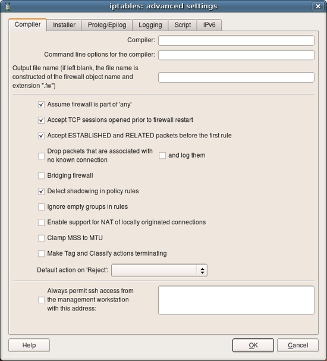
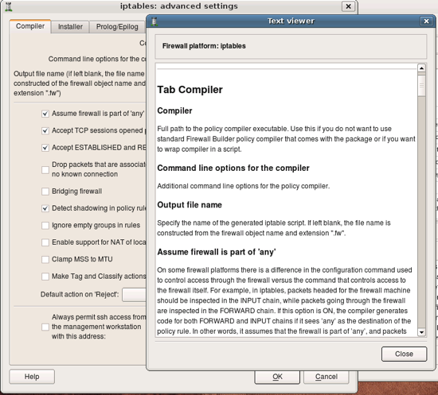
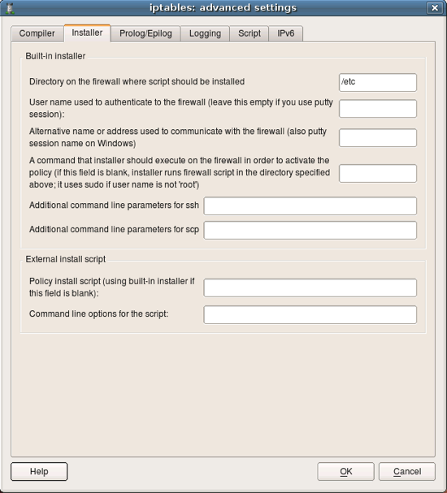
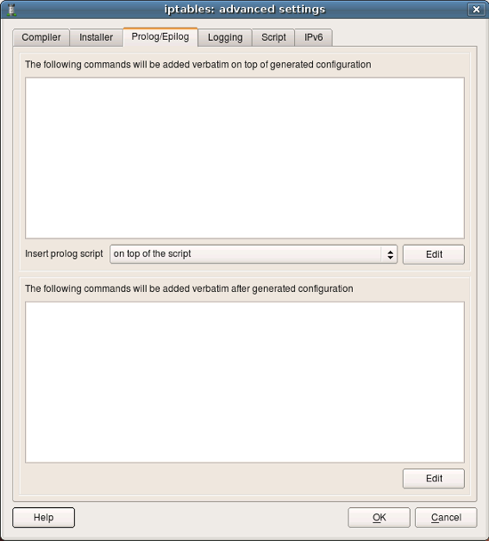
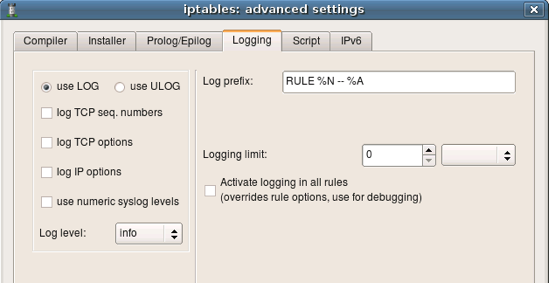
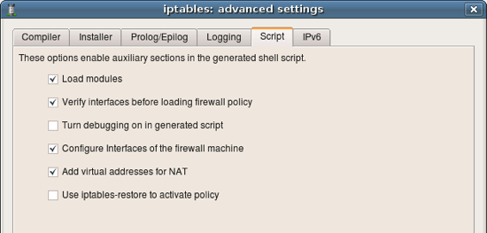
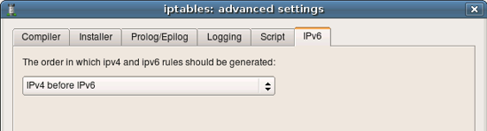

Lets inspect properties of the firewall object. Double click on the firewall "guardian" in the tree to open it in the editor panel, then click "Firewall Settings" button in the editor. This opens new dialog that looks like this. Notice button "Help" in this dialog, clicking this button opens help as shown on the next slide.
Online help explains all attributes and paramaters located in each tab of the firewall settings dialog. I enourage you to explore it as many parameters are important and affect generated iptables script in different ways.
Next few screenshots show other tabs of the firewall settings dialog. You can find detailed explanations of all parameters in the online help.
This page defines various parameters for the built-in policy installer. Installer uses ssh client (pscp.exe and plink.exe on Windows) to transfer generated script to the firewall machine and activate it there.
User can define shell commands that will be included in the generated script at the beginning and in the end of it. These commands can do anything you want, such as configure some subsystems, set up routing etc.
Parameters for logging.
More options for the script generation. Notice that fwbuilder can produce iptables script in two formats: 1) as a shell script that calls iptables utility to add each rule one by one, or 2) it can use iptables-restore script to activate the whole policy at once. Other parameters are explained in the online help.
Starting with v3.0 Firewall Builder can generate both IPv4 and IPv6 policy. This tab controls the order in which they are added to the script if user defined rules for both address families in the Policy objects of the firewall.
Lets take a look at the policy of the template firewall. These rules are intended to be an example, a starting point to help you create your own policy quicker. Most likely you will want to modify them to suite your requirements. Explanation of the rules given here is rather brief because the goal of this guide was only to demonstrate how to use Firewall Builder.
Policy rules belong to the object "Policy", which is a child object of the firewall and can be found in the tree right below it. As any other object in Firewall Builder, Policy object has some attributes that you can edit if you double click on it in the tree.
Here are preconfigured NAT rules.
| Previous | Next |